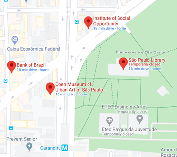

Localização de Hoje  De 11h até 14h Av. Gen. Ataliba Leonel, 245 - Santana De 14h até 16h Av. Cruzeiro do Sul, 2611 - Santana De 16h até 20h Rua Voluntários da Pátria, 1458 - Santana De 20h até 23h Av. Cruzeiro do Sul, 2630 - Santana